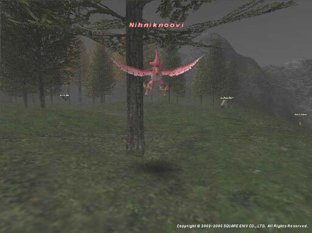

Level 75 reference · Zenith rules
|
Job: Notorious Monster |
 Image source |


|
Zone |
Level |
Drops |
Steal |
Spawns |
Notes | ||||||
|
1 |
| ||||||||||
|
HP = Detects Low HP; M = Detects Magic; Sc = Follows by Scent; T(S) = True-sight; T(H) = True-hearing JA = Detects job abilities; WS = Detects weaponskills; Z(D) = Asleep in Daytime; Z(N) = Asleep at Nighttime | |||||||||||
Notes:
- Nihniknoovi has an extremely fast attack rate.
- Chance of spawning from one of the FallenEgg that load at various spots in the zone. The FallenEgg have been seen at I-6, J-6, L-7, L-10, L-11. If one is selected and it does not spawn the NM, it can give just a message, or a Bird Egg. Either way, the FallenEgg will disappear and respawn elsewhere in around 5 minutes.
- Killable by: Solo at level 25
Adapted from Eden Wiki: Nihniknoovi · Contributors and history · CC BY-SA 4.0. Revision 1431. Layout, links and optional background text adapted for Zenith.